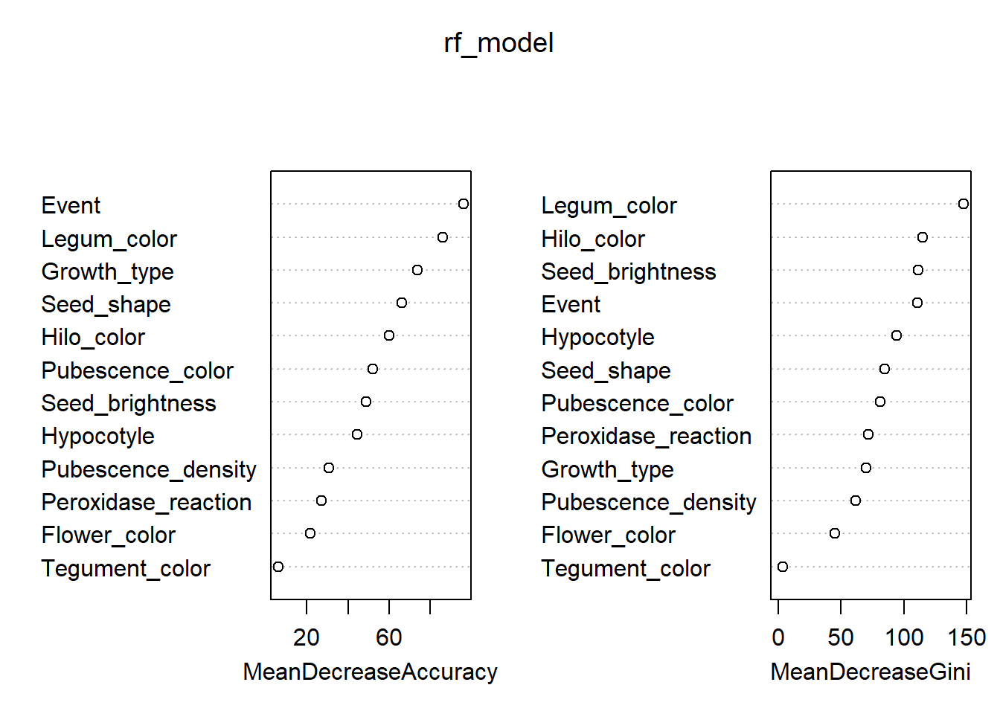
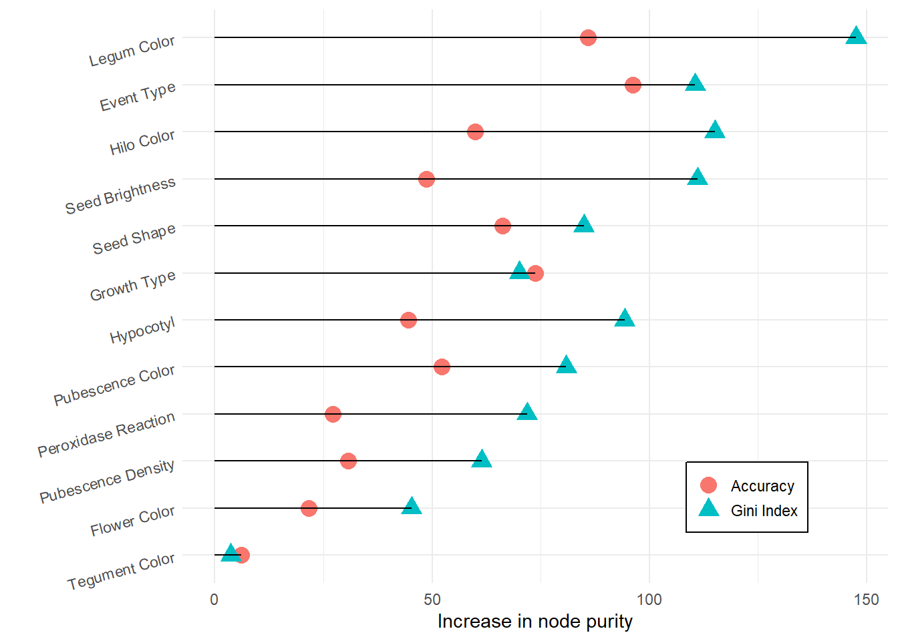
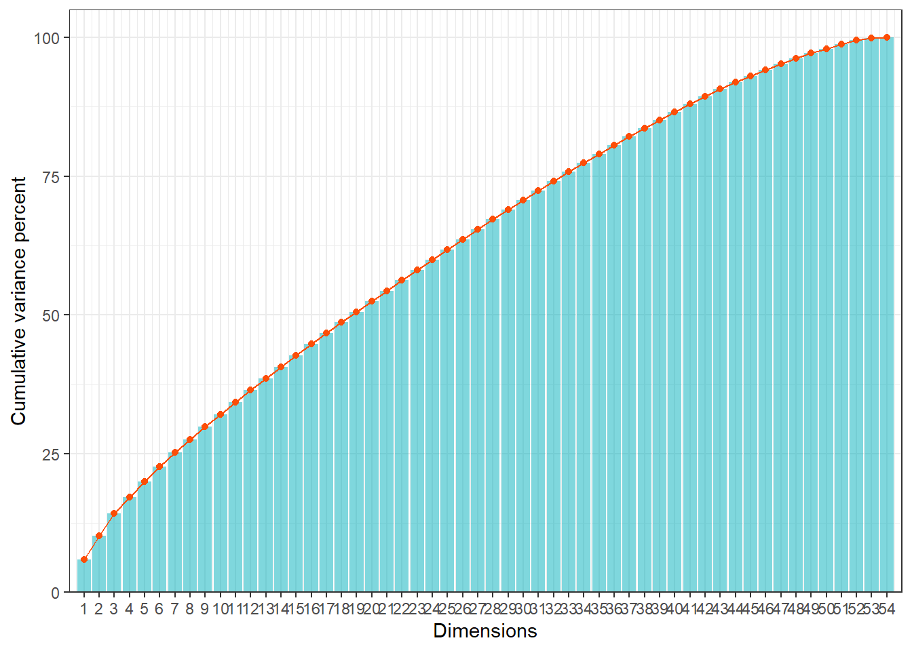
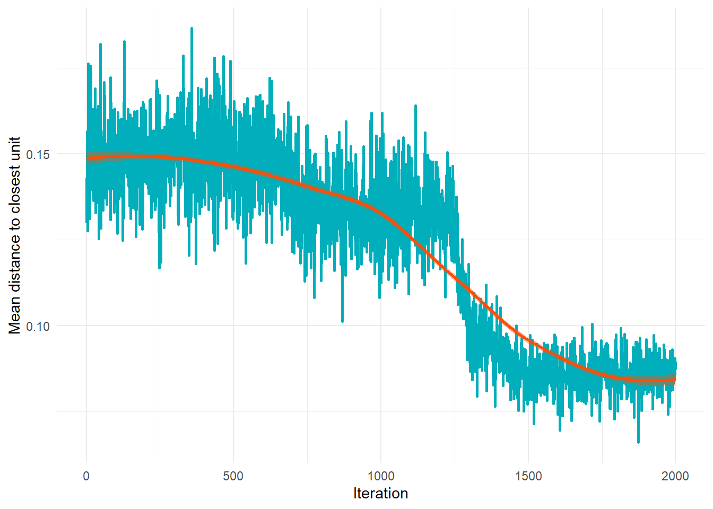
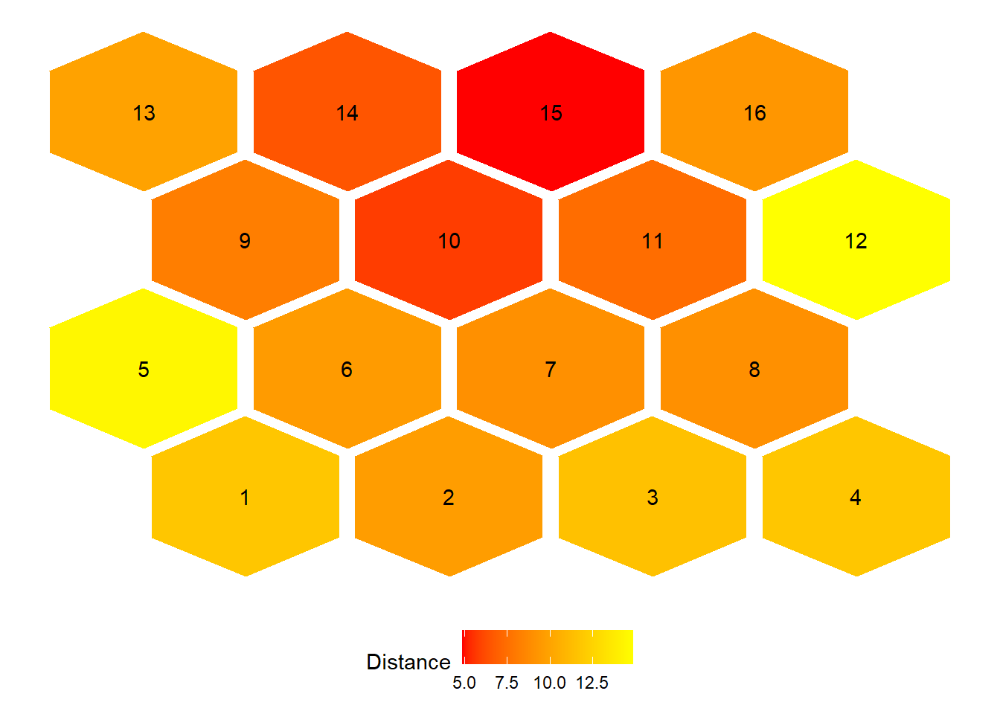
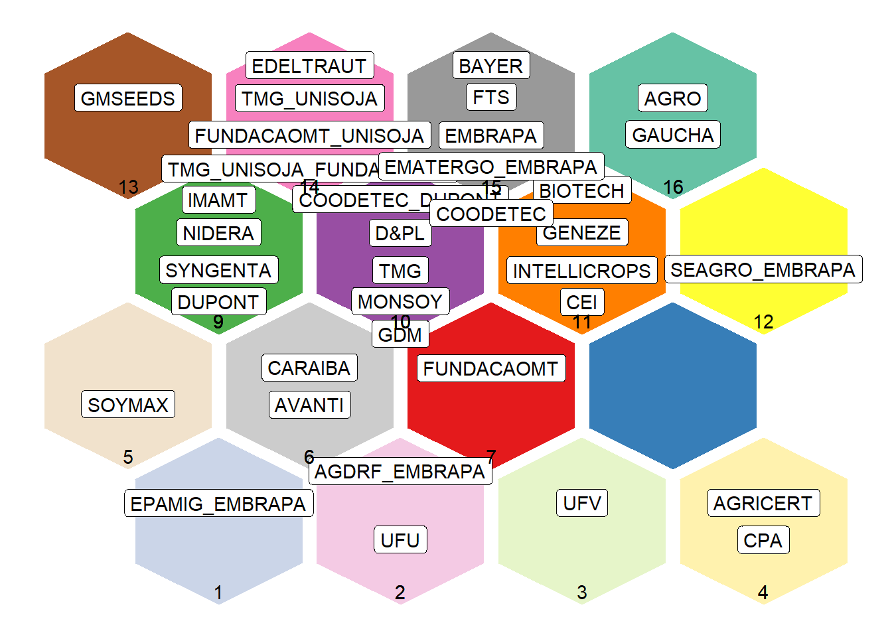
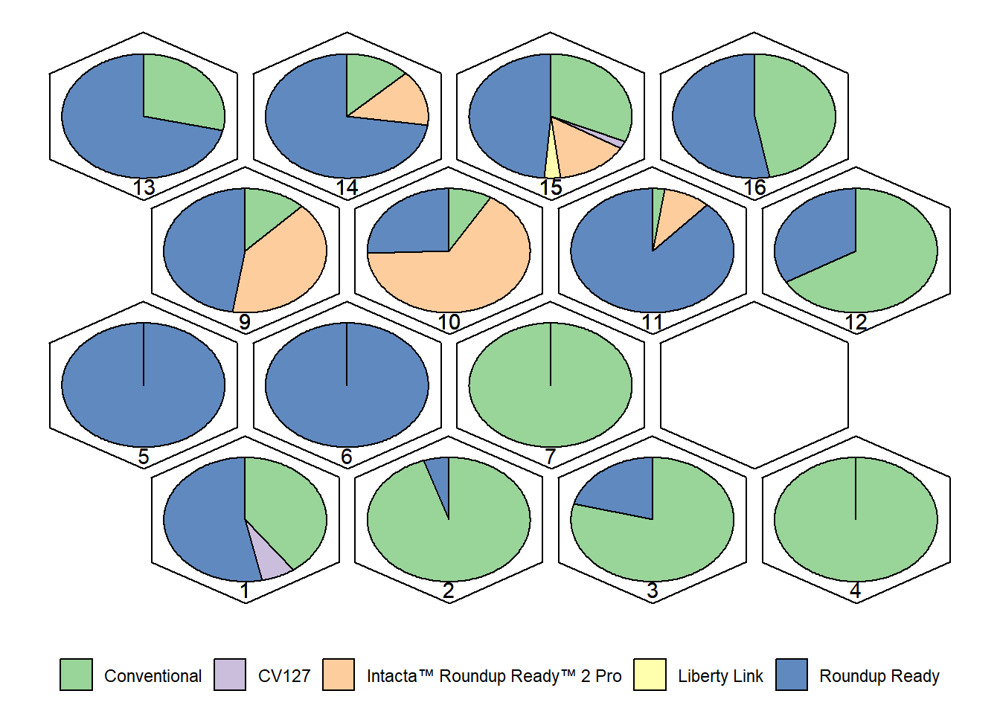
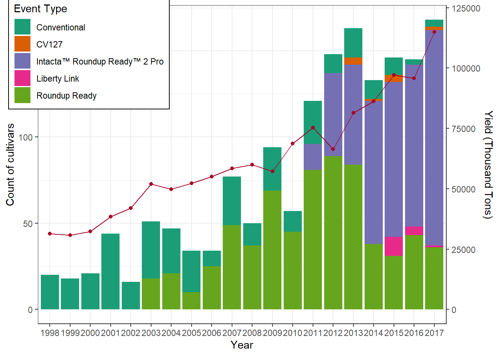
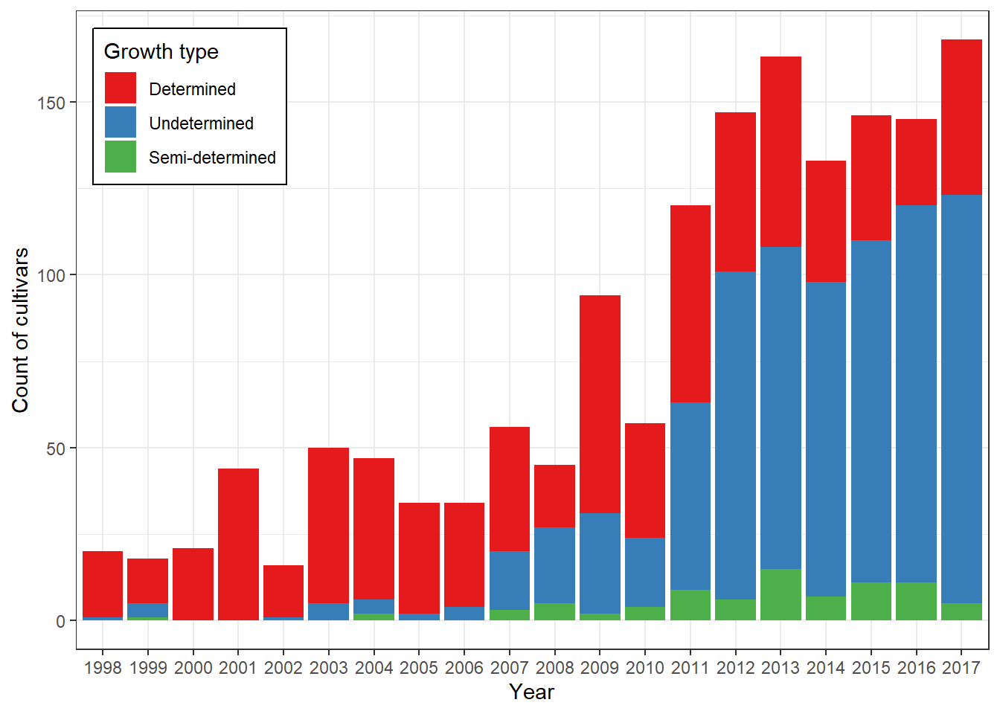

Last updated: 2025-10-03
Checks: 6 1
Knit directory:
Genetic-diversity-and-interaction-between-the-maintainers-of-commercial-Soybean-cultivars-using-self/
This reproducible R Markdown analysis was created with workflowr (version 1.7.2). The Checks tab describes the reproducibility checks that were applied when the results were created. The Past versions tab lists the development history.
The R Markdown is untracked by Git. To know which version of the R
Markdown file created these results, you’ll want to first commit it to
the Git repo. If you’re still working on the analysis, you can ignore
this warning. When you’re finished, you can run
wflow_publish to commit the R Markdown file and build the
HTML.
Great job! The global environment was empty. Objects defined in the global environment can affect the analysis in your R Markdown file in unknown ways. For reproduciblity it’s best to always run the code in an empty environment.
The command set.seed(20220620) was run prior to running
the code in the R Markdown file. Setting a seed ensures that any results
that rely on randomness, e.g. subsampling or permutations, are
reproducible.
Great job! Recording the operating system, R version, and package versions is critical for reproducibility.
Nice! There were no cached chunks for this analysis, so you can be confident that you successfully produced the results during this run.
Great job! Using relative paths to the files within your workflowr project makes it easier to run your code on other machines.
Great! You are using Git for version control. Tracking code development and connecting the code version to the results is critical for reproducibility.
The results in this page were generated with repository version 6d4687d. See the Past versions tab to see a history of the changes made to the R Markdown and HTML files.
Note that you need to be careful to ensure that all relevant files for
the analysis have been committed to Git prior to generating the results
(you can use wflow_publish or
wflow_git_commit). workflowr only checks the R Markdown
file, but you know if there are other scripts or data files that it
depends on. Below is the status of the Git repository when the results
were generated:
Ignored files:
Ignored: .Rproj.user/
Untracked files:
Untracked: analysis/script.Rmd
Unstaged changes:
Modified: README.md
Modified: analysis/_site.yml
Modified: analysis/about.Rmd
Modified: analysis/index.Rmd
Modified: analysis/license.Rmd
Note that any generated files, e.g. HTML, png, CSS, etc., are not included in this status report because it is ok for generated content to have uncommitted changes.
There are no past versions. Publish this analysis with
wflow_publish() to start tracking its development.
This script performs an analysis of genetic diversity and interaction among maintainers of commercial soybean cultivars using selfing. The analysis involves several steps, including data preprocessing, variable selection using Random Forest, dimensionality reduction with Multiple Correspondence Analysis (MCA), and clustering with Self-Organizing Maps (SOM). The results are visualized through various plots to interpret the patterns of diversity and trait distributions.
This document presents the main steps of the analysis described in the article:
Costa, W.G., et al. (2025). Genetic diversity and interaction
between the maintainers of commercial Soybean cultivars using selfing.
Crop Science.
DOI: 10.1002/csc2.20816
We will go through the following stages:
We start by loading the main R packages used in the analysis.
library("FactoMineR") # Métodos de análise multivariada, incluindo MCA (Multiple Correspondence Analysis)
library("factoextra") # Funções para visualização elegante de resultados de análises multivariadas (PCA, MCA, clustering)
library(readxl) # Importação de arquivos Excel (.xlsx), onde estão armazenados os dados brutos
library(randomForest) # Implementação do algoritmo Random Forest para seleção de variáveis e análise de importância
library(tidyverse) # Conjunto de pacotes (dplyr, ggplot2, tidyr, etc.) para manipulação e visualização de dados
require(magrittr) # Operador pipe (%>%) e funções auxiliares para tornar o código mais legível
require(reshape2) # Funções para reorganizar dados (melt, cast), úteis em gráficos e análises
library(ggforce) # Extensões do ggplot2 para gráficos avançados (arcos, diagramas, formas geométricas)
library("kohonen") # Implementação de Mapas Auto-Organizáveis (Self-Organizing Maps - SOM) para clustering
library(RColorBrewer) # Paletas de cores pré-definidas para melhorar a estética dos gráficos
require("ggrepel") # Rótulos de texto em gráficos ggplot2 que evitam sobreposição (geom_text_repel)
library(gridExtra) # Combinação e organização de múltiplos gráficos em uma mesma página/figuraWe define a qualitative color palette using
RColorBrewer.
These palettes are especially useful for categorical data, ensuring that
groups (e.g., maintainers or trait categories) are visually distinct in
the plots.
qual_col_pals = brewer.pal.info[brewer.pal.info$category == 'qual', ]
col_vector = unlist(mapply(brewer.pal, qual_col_pals$maxcolors, rownames(qual_col_pals)))We import the dataset containing information about soybean cultivar
maintainers and their morphological descriptors.
The data is stored in an Excel file (data.xlsx).
data <- read_excel("data/data.xlsx")To ensure robust analysis, we remove maintainers with very few
observations (≤ 5).
Small sample sizes can introduce noise and bias in clustering and
multivariate methods, so filtering them out improves the reliability of
the results.
lower5 <- data %>%
group_by(Maintainer_coded) %>%
count() %>%
filter(n <= 5)
data <- data[!data$Maintainer_coded %in% lower5$Maintainer_coded, ]Most of the descriptors in the dataset are categorical
traits (e.g., seed color, growth type, pubescence
density).
To ensure that statistical methods such as Random
Forest and Multiple Correspondence Analysis
(MCA) handle them correctly, we convert all variables into
factors.
for (i in 1:ncol(data)) {
data[[i]] = as.factor(data[[i]])
}Explanation:
By converting all columns into factors, we guarantee that categorical
variables are treated as qualitative data rather than numeric codes.
This step is essential for analyses that rely on the categorical nature
of traits, such as MCA, which is designed specifically for factor
variables.
In this step, we apply the Random Forest algorithm
to identify which traits are most important for distinguishing soybean
cultivar maintainers.
Random Forest is an ensemble method that builds multiple decision trees
and aggregates their results, providing both classification accuracy and
a measure of variable importance.
set.seed(123) # Ensures reproducibility
# Excluding Name, Maintainer and Year variables (not used in the analysis)
data = data[, -c(1, 2, 5)]
ntraits <- (ncol(data) - 1) / 3 # Number of traits divided by 3
ntree <- 500 # Number of trees
# Fit Random Forest model
rf_model <- randomForest(
data$Maintainer_coded ~ .,
data = data,
mtry = ntraits,
importance = TRUE,
proximity = TRUE,
ntree = ntree,
na.action = na.roughfix
)Explanation:
The Random Forest model provides two importance measures:
- Accuracy: how much classification accuracy decreases
if the variable is removed.
- Gini Index: how much the variable contributes to node
purity in decision trees.
imp <- as.data.frame(varImpPlot(rf_model))
imp$traitnames <- rownames(imp)
imp_trait <- melt(imp, id.var = "traitnames")
imp_trait$traitnames <- as.factor(imp_trait$traitnames)
levels(imp_trait$traitnames) <- c(
"Event Type",
"Flower Color",
"Growth Type",
"Hilo Color",
"Hypocotyl",
"Legum Color",
"Peroxidase Reaction",
"Pubescence Color",
"Pubescence Density",
"Seed Brightness",
"Seed Shape",
"Tegument Color"
)imp_trait %>%
mutate(traitnames = fct_reorder(traitnames, value)) %>%
ggplot(aes(x = traitnames, y = value)) +
geom_point(aes(colour = variable, shape = variable), size = 4) +
scale_colour_discrete(labels = c("Accuracy", "Gini Index")) +
scale_shape_discrete(labels = c("Accuracy", "Gini Index")) +
geom_segment(aes(
x = traitnames,
xend = traitnames,
y = 0,
yend = value
)) +
ylab("Increase in node purity") +
xlab("") +
theme_minimal() +
theme(
legend.position = c(0.8, 0.15),
legend.title = element_blank(),
legend.background = element_rect(fill = "white", colour = "black"),
legend.key.size = unit(0.5, "cm"),
axis.text.y = element_text(angle = 15, vjust = 0.5, hjust = 1)
) +
coord_flip()
To simplify the dataset and reduce noise, we exclude the four traits with the lowest importance scores.
x <- imp_trait %>%
group_by(traitnames) %>%
summarise(value = mean(value)) %>%
slice_min(value, n = 4, with_ties = FALSE) %>%
ungroup()
colnames(data) <- c(
"Maintainer_coded",
"Event Type",
"Flower Color",
"Legum Color",
"Seed Shape",
"Tegument Color",
"Hypocotyl",
"Pubescence Color",
"Pubescence Density",
"Hilo Color",
"Peroxidase Reaction",
"Growth Type",
"Seed Brightness"
)
# Remove the least important traits
data <- data %>% select(!any_of(x$traitnames))In this step, we apply Multiple Correspondence Analysis
(MCA) to reduce the dimensionality of the categorical
dataset.
MCA is particularly suitable for analyzing relationships between
categorical variables, allowing us to summarize the information into a
smaller number of dimensions while preserving as much variance as
possible.
We run MCA on the dataset, treating the first column
(Maintainer_coded) as a supplementary qualitative variable
(not used to build the axes but projected afterwards).
res.mca <- MCA(
data,
quali.sup = 1, # Maintainer_coded as supplementary variable
graph = FALSE, # Suppress automatic plots
ncp = 54 # Number of dimensions to compute
)The eigenvalues represent the amount of variance explained by each
dimension.
By examining them, we can decide how many dimensions are relevant for
interpretation.
eig.val <- get_eigenvalue(res.mca)
eig.val eigenvalue variance.percent cumulative.variance.percent
Dim.1 0.402480476 5.96267372 5.962674
Dim.2 0.284778036 4.21893386 10.181608
Dim.3 0.270253673 4.00375812 14.185366
Dim.4 0.203433768 3.01383360 17.199199
Dim.5 0.187328114 2.77523131 19.974431
Dim.6 0.184031980 2.72639971 22.700830
Dim.7 0.167652926 2.48374705 25.184577
Dim.8 0.162517355 2.40766453 27.592242
Dim.9 0.152768789 2.26324131 29.855483
Dim.10 0.151812314 2.24907132 32.104555
Dim.11 0.148000840 2.19260504 34.297160
Dim.12 0.144838569 2.14575658 36.442916
Dim.13 0.143065848 2.11949404 38.562410
Dim.14 0.140373737 2.07961091 40.642021
Dim.15 0.139461100 2.06609037 42.708111
Dim.16 0.136846878 2.02736115 44.735473
Dim.17 0.134072117 1.98625359 46.721726
Dim.18 0.131163553 1.94316375 48.664890
Dim.19 0.128359156 1.90161712 50.566507
Dim.20 0.127350293 1.88667100 52.453178
Dim.21 0.126977040 1.88114133 54.334319
Dim.22 0.125921907 1.86550973 56.199829
Dim.23 0.125356705 1.85713638 58.056966
Dim.24 0.125303122 1.85634254 59.913308
Dim.25 0.124671194 1.84698065 61.760289
Dim.26 0.123799723 1.83406997 63.594359
Dim.27 0.122764633 1.81873531 65.413094
Dim.28 0.121421046 1.79883032 67.211924
Dim.29 0.120260820 1.78164178 68.993566
Dim.30 0.117533062 1.74123054 70.734797
Dim.31 0.115027236 1.70410720 72.438904
Dim.32 0.114202013 1.69188168 74.130785
Dim.33 0.111507893 1.65196878 75.782754
Dim.34 0.109699995 1.62518511 77.407939
Dim.35 0.108166876 1.60247224 79.010412
Dim.36 0.106518586 1.57805313 80.588465
Dim.37 0.105464112 1.56243129 82.150896
Dim.38 0.101919534 1.50991903 83.660815
Dim.39 0.099461844 1.47350881 85.134324
Dim.40 0.097671687 1.44698795 86.581312
Dim.41 0.094878115 1.40560170 87.986914
Dim.42 0.093241012 1.38134833 89.368262
Dim.43 0.088330043 1.30859323 90.676855
Dim.44 0.082579662 1.22340241 91.900257
Dim.45 0.078630285 1.16489312 93.065151
Dim.46 0.074562314 1.10462688 94.169777
Dim.47 0.071196443 1.05476212 95.224540
Dim.48 0.065856898 0.97565775 96.200197
Dim.49 0.063338828 0.93835301 97.138550
Dim.50 0.056963360 0.84390163 97.982452
Dim.51 0.054646507 0.80957788 98.792030
Dim.52 0.052252523 0.77411146 99.566141
Dim.53 0.025303341 0.37486431 99.941006
Dim.54 0.003982118 0.05899435 100.000000# Convert to data frame for plotting
eig.val <- as.data.frame(eig.val)
eig.val$Dimension <- as.numeric(str_replace(rownames(eig.val), "Dim.", ""))We plot the cumulative variance explained by the dimensions.
This helps us identify the number of dimensions that capture most of the
variability in the data.
ggplot(data = eig.val, aes(x = Dimension, y = cumulative.variance.percent)) +
geom_bar(stat = "identity", fill = "#00AFBB", alpha = 0.5) +
geom_point(colour = "#FC4E07") +
geom_line(colour = "#FC4E07") +
scale_x_continuous(breaks = c(1:nrow(eig.val)), expand = c(0.01, 0)) +
scale_y_continuous(expand = expansion(mult = c(0, .05))) +
theme_bw() +
labs(
x = "Dimensions",
y = "Cumulative variance percent"
)
Interpretation:
- The first few dimensions usually explain the majority of the
variance.
- We will focus on these dimensions in the next steps (clustering with
SOM), as they capture the most relevant patterns of diversity among
maintainers.
In this step, we use Kohonen’s Self-Organizing Maps
(SOM) to group soybean cultivar maintainers based on their
coordinates obtained from the MCA.
SOM is an unsupervised neural network that projects
high-dimensional data into a two-dimensional grid, preserving the
topological relationships between observations.
This allows us to identify clusters of maintainers with similar genetic
profiles.
We first define the network topology (grid) and parameters for training the SOM.
map_dimension = 4: creates a 4x4 hexagonal grid (16
neurons).n_iterations = 2000: number of training
iterations.topo = "hexagonal": hexagonal topology ensures smoother
neighborhood relations.toroidal = FALSE: edges of the grid are not
connected.# Network topology and parameters
map_dimension = 4
n_iterations = 2000
# Define SOM grid
som_grid = kohonen::somgrid(
xdim = map_dimension,
ydim = map_dimension,
topo = "hexagonal",
toroidal = FALSE
)
# Coordinates of maintainers in the MCA space (54 dimensions)
b <- res.mca[["quali.sup"]][["coord"]]We now train the SOM using the MCA coordinates as input.
The data is scaled to ensure all dimensions contribute equally to the
distance calculations.
rlen = n_iterations: number of iterations.alpha = c(0.05, 0.01): learning rate schedule (starts
at 0.05 and decreases to 0.01).dist.fcts = 'euclidean': Euclidean distance is used to
measure similarity.set.seed(123) # Ensures reproducibility
m = kohonen::supersom(
scale(b), # Input data (scaled MCA coordinates)
grid = som_grid, # SOM grid defined above
rlen = n_iterations,
alpha = c(0.05, 0.01),
dist.fcts = 'euclidean'
)Interpretation:
The trained SOM organizes maintainers into clusters on the 2D
grid.
- Each hexagon (neuron) represents a group of maintainers with similar
trait profiles.
- Neighboring hexagons contain maintainers that are more similar to each
other.
- This clustering will be visualized in the next steps to interpret
diversity and interaction patterns.
After training the Self-Organizing Map (SOM), we now explore its
outputs through different visualizations.
These plots help us evaluate the quality of the training, the stability
of the clusters, and the relationships between neighboring neurons.
The interaction graph shows how the average distance
to the closest unit decreases during training.
A smooth decline indicates that the SOM is converging and
stabilizing.
progress <- as.data.frame(cbind(m$changes, 1:nrow(m$changes)))
colnames(progress) <- c("Mean distance to closest unit", "Iteration")
ggplot(progress, aes(Iteration, `Mean distance to closest unit`)) +
geom_line(color = "#00AFBB", linewidth = 1) +
stat_smooth(color = "#FC4E07",
fill = "#FC4E07",
method = "loess") +
theme_minimal() +
labs(y = colnames(progress[1]))
Interpretation:
- The curve should decrease as iterations progress.
- A plateau indicates that the SOM has reached stability.
We assign each maintainer to a SOM unit (cluster) and merge this
classification back into the dataset.
This allows us to analyze the frequency of traits within each
cluster.
grouping <- as_tibble(cbind(m$unit.classif, rownames(b)))
colnames(grouping) <- c("group", "Maintainer_coded")
grouping$group <- as.factor(grouping$group)
grouping$Maintainer_coded <- as.factor(grouping$Maintainer_coded)
# Merge cluster assignment into the dataset
data <- data %>% left_join(grouping)Interpretation:
Each maintainer is now associated with a cluster (group), enabling trait
distribution analysis across clusters.
This visualization shows the average distance between
neighboring neurons in the SOM grid.
It highlights regions of the map where clusters are more distinct
(larger distances) or more similar (smaller distances).
som_coord <- m[[4]]$pts %>%
as_tibble %>%
mutate(group = as.integer(row_number()))
som_pts <- tibble(group = as.integer(m[[2]]),
dist = m[[3]])
ndist <- unit.distances(m$grid)
cddist <- as.matrix(object.distances(m, type = "codes"))
cddist[abs(ndist - 1) > .001] <- NA
neigh.dists <- colMeans(cddist, na.rm = TRUE)
som_coord <- som_coord %>% mutate(dist = neigh.dists)
neigdists <- som_coord %>%
ggplot(aes(x0 = x, y0 = y)) +
geom_regon(aes(
r = 0.5,
angle = 11,
sides = 6,
fill = dist
),
expand = unit(0.1, 'cm')) +
scale_fill_gradient(low = "red", high = "yellow", name = "Distance") +
theme(
panel.background = element_blank(),
axis.ticks = element_blank(),
panel.grid = element_blank(),
axis.text = element_blank(),
axis.title = element_blank(),
legend.position = "bottom"
) +
geom_text_repel(
data = som_coord,
aes(x = x, y = y, label = group),
hjust = 0.5,
force = 0,
color = "black",
show.legend = FALSE,
segment.color = NA
)
neigdists
Interpretation:
- Red areas indicate neurons that are more distinct
from their neighbors (potential cluster boundaries).
- Yellow areas indicate neurons that are more similar
to their neighbors (homogeneous regions).
- The labels show the neuron (cluster) IDs.
After training and validating the SOM, we now visualize how
maintainers and their traits are
distributed across the clusters.
This step is crucial to interpret the biological meaning of the clusters
and to identify which characteristics are most associated with each
group.
This plot shows the position of each maintainer in the SOM
grid.
Each hexagon represents a neuron (cluster), and labels indicate the
maintainers assigned to that cluster.
p <- som_coord %>%
ggplot(aes(x0 = x, y0 = y)) +
geom_regon(aes(
r = 0.5,
angle = 11,
sides = 6,
fill = factor(group)
),
expand = unit(0.1, 'cm')) +
theme(
panel.background = element_blank(),
axis.ticks = element_blank(),
panel.grid = element_blank(),
axis.text = element_blank(),
axis.title = element_blank(),
legend.position = "none"
) +
scale_fill_manual(values = col_vector[40:56])
plotdata <- data %>%
group_by(group, Maintainer_coded) %>%
summarize(n = n()) %>%
mutate(pct = (n / sum(n)),
lbl = scales::percent(pct)) %>%
ungroup()
plotdata$group <- as.integer(levels(plotdata$group))[plotdata$group]
plotdata <- plotdata %>% left_join(som_coord, by = "group")
plotdata <- na.omit(plotdata)
MC <- p +
geom_label_repel(
data = plotdata,
aes(x = x, y = y, label = Maintainer_coded),
max.overlaps = Inf,
box.padding = 0.1,
hjust = 0.5,
direction = "y",
color = "black",
show.legend = FALSE,
segment.color = NA
) +
geom_text(
data = plotdata,
aes(
x = x,
y = (y - 0.45),
label = group
),
color = "black",
show.legend = FALSE
) +
theme(plot.title = element_blank())
MC
Interpretation:
- Each maintainer is placed in a cluster (hexagon).
- Clusters with multiple maintainers indicate groups with similar
genetic profiles.
We now visualize how trait categories (e.g., Event
Type, Legum Color, Seed Shape, Hypocotyl, Pubescence Color, Hilo Color,
Growth Type, Seed Brightness) are distributed across clusters.
Each cluster is represented by a pie chart, showing the
proportion of each trait category within that cluster.
Example: Event Type
p <- som_coord %>%
ggplot(aes(x0 = x, y0 = y)) +
geom_regon(
aes(r = 0.5, angle = 11, sides = 6),
expand = unit(0.1, 'cm'),
alpha = 0,
color = "black"
) +
theme(
panel.background = element_blank(),
axis.ticks = element_blank(),
panel.grid = element_blank(),
axis.text = element_blank(),
axis.title = element_blank(),
legend.position = "bottom"
)
plotdata <- data %>%
group_by(group, `Event Type`) %>%
summarize(n = n()) %>%
mutate(pct = (n / sum(n)),
lbl = scales::percent(pct)) %>%
ungroup()
plotdata$group <- as.integer(levels(plotdata$group))[plotdata$group]
plotdata <- plotdata %>% left_join(som_coord, by = "group")
plotdata <- na.omit(plotdata)
levels(plotdata$`Event Type`) <-
c(
"Conventional",
"CV127",
"Intacta™ Roundup Ready™ 2 Pro",
"Liberty Link",
"Roundup Ready"
)
EV <- p +
geom_arc_bar(
data = plotdata,
aes(
x0 = x,
y0 = y,
r0 = 0,
r = 0.4,
amount = n,
fill = `Event Type`
),
stat = 'pie',
alpha = 0.8
) +
scale_fill_manual(values = col_vector[1:5]) +
geom_text(
data = plotdata,
aes(
x = x,
y = (y - 0.45),
label = group
),
color = "black",
show.legend = FALSE
) +
theme(plot.title = element_blank(), legend.title = element_blank())
EV
Interpretation:
- Each cluster shows the proportion of cultivars belonging to different
event types.
- Similar plots can be generated for Legum Color, Seed Shape,
Hypocotyl, Pubescence Color, Hilo Color, Growth Type, and Seed
Brightness (as in your code).
- These visualizations help identify which traits are dominant in each
cluster, providing biological meaning to the grouping.
In this final step, we integrate productivity data
with the classification of cultivars by event type and
growth type.
The goal is to visualize how the adoption of different technologies and
plant architectures has evolved over time, and how this relates to
soybean yield.
We import the productivity dataset (yield.xlsx) and
reload the main dataset (data.xlsx) to ensure
consistency.
yield <- read_excel("data/yield.xlsx")
data <- read_excel("data/data.xlsx")
# Transform variables into factors
yield$Year <- as.factor(yield$Year)
for (i in 1:ncol(data)) {
data[[i]] = as.factor(data[[i]])
}We plot the number of cultivars per event type
(bars) alongside the soybean yield (line +
points).
This dual-axis plot allows us to compare the evolution of cultivar
adoption with national productivity trends.
levels(data$Event) <-
c(
"Conventional",
"CV127",
"Intacta™ Roundup Ready™ 2 Pro",
"Liberty Link",
"Roundup Ready"
)
ggplot() +
geom_bar(data = data, aes(Year, fill = Event)) +
geom_point(data = yield,
aes(x = Year, y = (Yield * (175 / 125000))),
group = 1,
color = "#a50026") +
geom_line(
data = yield,
aes(x = Year, y = Yield * (175 / 125000)),
group = 1,
color = "#a50026"
) +
scale_y_continuous(
name = "Count of cultivars",
sec.axis = sec_axis(~ . * 125000 / 175, name = "Yield (Thousand Tons)")
) +
theme_bw() +
xlab("Year") +
scale_fill_brewer(palette = "Dark2") +
labs(fill = "Event Type") +
theme(
legend.position = c(0.125, 0.85),
legend.background = element_rect(fill = "white", colour = "black")
)
Interpretation:
- Bars show how the number of cultivars of each event
type changes over time.
- The red line shows soybean yield (in thousand tons).
- This allows us to see whether the adoption of certain technologies
coincides with productivity gains.
We now analyze the distribution of cultivars by growth type (determined, undetermined, semi-determined) across years.
levels(data$Growth_type) <- c("Determined",
"Undetermined",
"Semi-determined")
data %>%
filter(Growth_type != "NA") %>%
ggplot() +
geom_bar(aes(Year, fill = Growth_type)) +
theme_bw() +
xlab("Year") +
ylab("Count of cultivars") +
scale_fill_brewer(palette = "Set1") +
labs(fill = "Growth type") +
theme(
legend.position = c(0.125, 0.85),
legend.background = element_rect(fill = "white", colour = "black")
)
Interpretation:
- This graph shows how the prevalence of different growth
types has shifted over time.
- It helps identify whether certain plant architectures became dominant
in specific periods, possibly linked to productivity improvements.
With these final plots, we close the pipeline by connecting
genetic diversity and trait distribution to
agronomic performance (yield).
This integrated view highlights how technological
events and growth types have influenced
soybean productivity trends in Brazil.
The complete analysis provides insights into the genetic diversity among soybean cultivar maintainers and how this diversity relates to agronomic outcomes.
In this final step, we summarize the main findings of the analysis and highlight how the different methods complement each other to provide a comprehensive view of genetic diversity among soybean cultivar maintainers.
This pipeline demonstrates the power of combining machine
learning (Random Forest), multivariate statistics
(MCA), and unsupervised neural networks (SOM)
in plant breeding research.
By integrating genetic descriptors with
productivity data, we gain valuable insights into how
cultivar maintainers interact, diversify, and adapt to technological and
agronomic demands.
The workflow is fully reproducible and can be adapted to other crops or datasets, serving as a template for future studies in genetic diversity and cultivar management.
sessionInfo()R version 4.5.1 (2025-06-13 ucrt)
Platform: x86_64-w64-mingw32/x64
Running under: Windows 11 x64 (build 26100)
Matrix products: default
LAPACK version 3.12.1
locale:
[1] LC_COLLATE=Portuguese_Brazil.utf8 LC_CTYPE=Portuguese_Brazil.utf8
[3] LC_MONETARY=Portuguese_Brazil.utf8 LC_NUMERIC=C
[5] LC_TIME=Portuguese_Brazil.utf8
time zone: America/Sao_Paulo
tzcode source: internal
attached base packages:
[1] stats graphics grDevices utils datasets methods base
other attached packages:
[1] gridExtra_2.3 ggrepel_0.9.6 RColorBrewer_1.1-3
[4] kohonen_3.0.12 ggforce_0.5.0 reshape2_1.4.4
[7] magrittr_2.0.4 lubridate_1.9.4 forcats_1.0.0
[10] stringr_1.5.2 dplyr_1.1.4 purrr_1.1.0
[13] readr_2.1.5 tidyr_1.3.1 tibble_3.3.0
[16] tidyverse_2.0.0 randomForest_4.7-1.2 readxl_1.4.5
[19] factoextra_1.0.7 ggplot2_4.0.0 FactoMineR_2.12
loaded via a namespace (and not attached):
[1] gtable_0.3.6 xfun_0.53 bslib_0.9.0
[4] htmlwidgets_1.6.4 lattice_0.22-7 tzdb_0.5.0
[7] vctrs_0.6.5 tools_4.5.1 generics_0.1.4
[10] cluster_2.1.8.1 pkgconfig_2.0.3 Matrix_1.7-3
[13] S7_0.2.0 scatterplot3d_0.3-44 lifecycle_1.0.4
[16] compiler_4.5.1 farver_2.1.2 git2r_0.36.2
[19] leaps_3.2 httpuv_1.6.16 htmltools_0.5.8.1
[22] sass_0.4.10 yaml_2.3.10 later_1.4.4
[25] pillar_1.11.1 jquerylib_0.1.4 MASS_7.3-65
[28] flashClust_1.01-2 DT_0.34.0 cachem_1.1.0
[31] nlme_3.1-168 tidyselect_1.2.1 digest_0.6.37
[34] mvtnorm_1.3-3 stringi_1.8.7 splines_4.5.1
[37] labeling_0.4.3 polyclip_1.10-7 rprojroot_2.1.1
[40] fastmap_1.2.0 grid_4.5.1 cli_3.6.5
[43] withr_3.0.2 scales_1.4.0 promises_1.3.3
[46] timechange_0.3.0 estimability_1.5.1 rmarkdown_2.29
[49] emmeans_1.11.2-8 workflowr_1.7.2 cellranger_1.1.0
[52] hms_1.1.3 evaluate_1.0.5 knitr_1.50
[55] mgcv_1.9-3 rlang_1.1.6 Rcpp_1.1.0
[58] xtable_1.8-4 glue_1.8.0 tweenr_2.0.3
[61] rstudioapi_0.17.1 jsonlite_2.0.0 plyr_1.8.9
[64] R6_2.6.1 fs_1.6.6 multcompView_0.1-10 Weverton Gomes da Costa, Doutorando, Pós-Graduação em Genética e Melhoramento - Universidade Federal de Viçosa, wevertonufv@gmail.com↩︎